What
I’m in the process of renovating a small flat. The floors are in such a bad shape. We’ve previously established that a 2D height map would help. In the following I’ll show a camera-based method for creating such a height map.
Contents
Contents
When
Last time I wrote about the need for a two dimensional map of the floor (see my previous post) to more strategically pour leveling compound and waste less material.
My methods have evolved over time and I’ve learned alot along the way that I will share in the following.
Background
Background
I have since experimented with using two cameras. One pointing at the room in order to gather positional information and one pointed at a ruler from which the green line of the leveling laser is reflected.
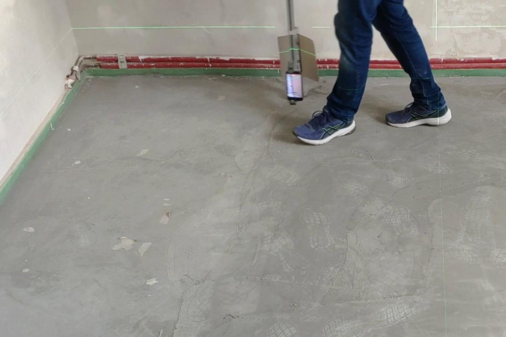

We can combine the videos from both angles and annotate them to produce the desired height map of the floor.
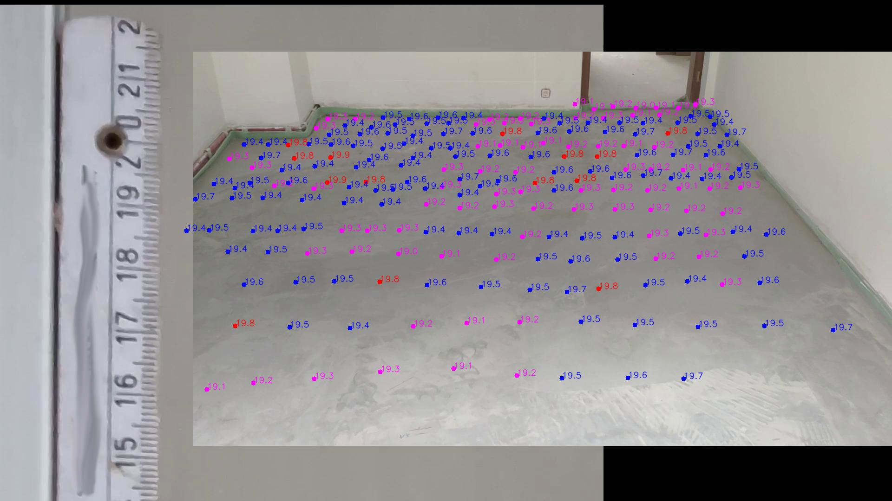
How
Hardware Setup
I’ve improved upon the early hardware setup over time and will share my findings.
Improvements over time
An early version of the rig looked like this:
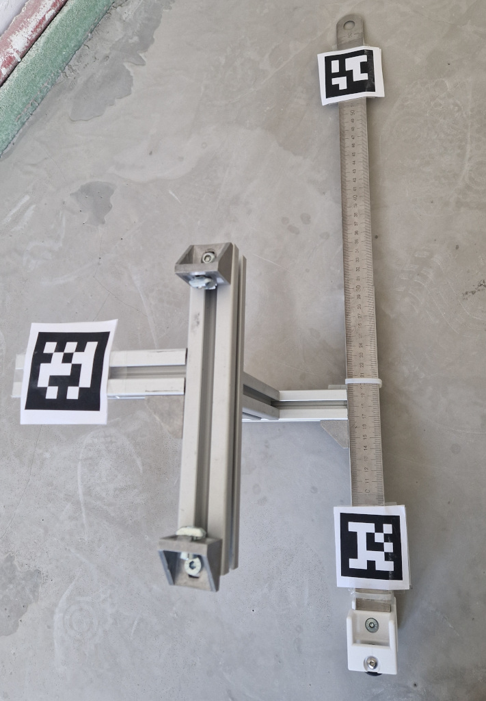
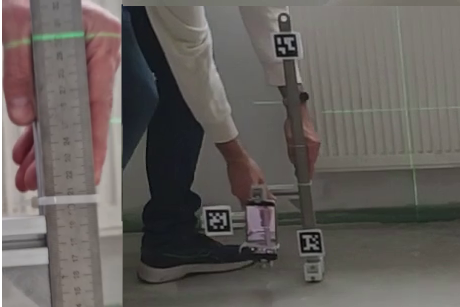
It had numerous issues due to the smartphone obstructing the laser line, the ruler reflecting the laser light, background light causing the camera to refocus, the smart phone being off-center and the construction not being sturdy enough.
That was modified to keep the camera more inline and rubber was added to keep the smartphone more stable during recording.
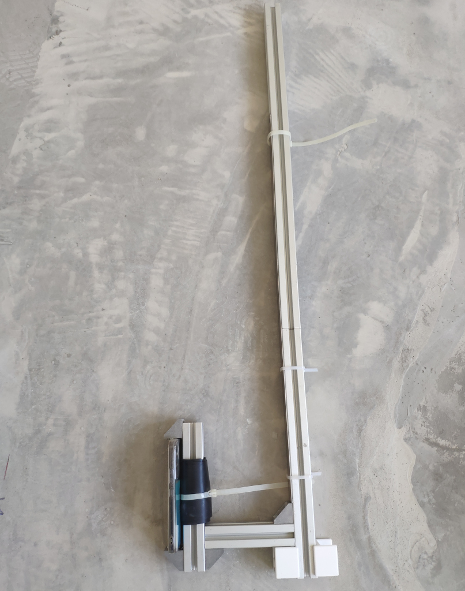
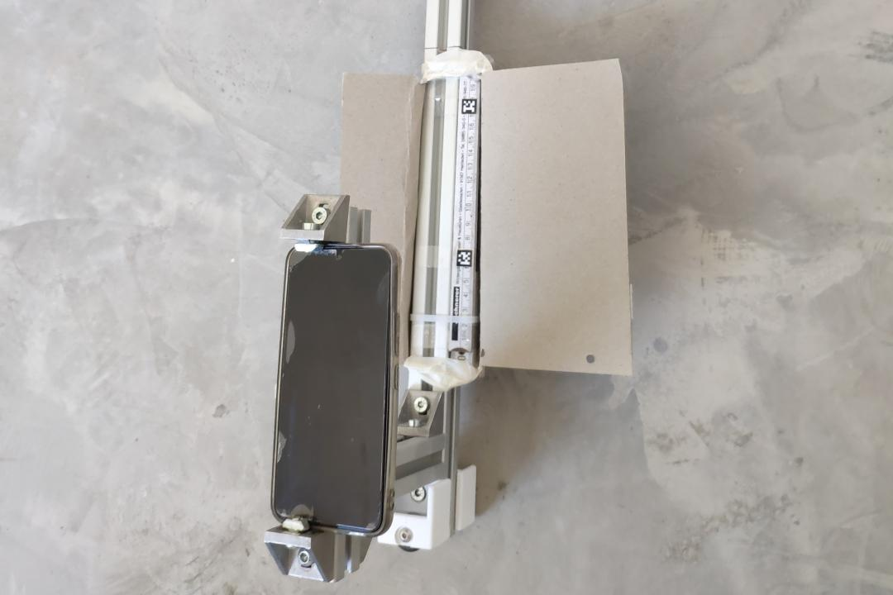
I then moved on to improve this further by using a smartphone to camera hot shoe ball-ring adapter. Once the camera hot shoe is grinded down enough it fits directly onto the aluminium extrusion. Grinding it down can be achieved with a rotary tool and diamond cutting blade.
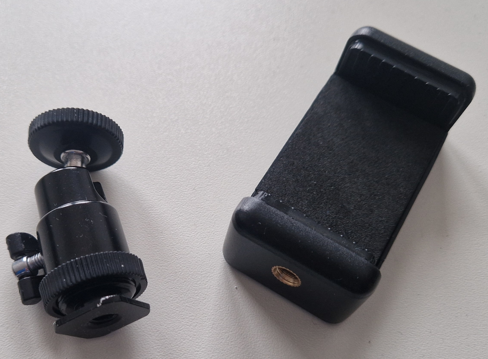
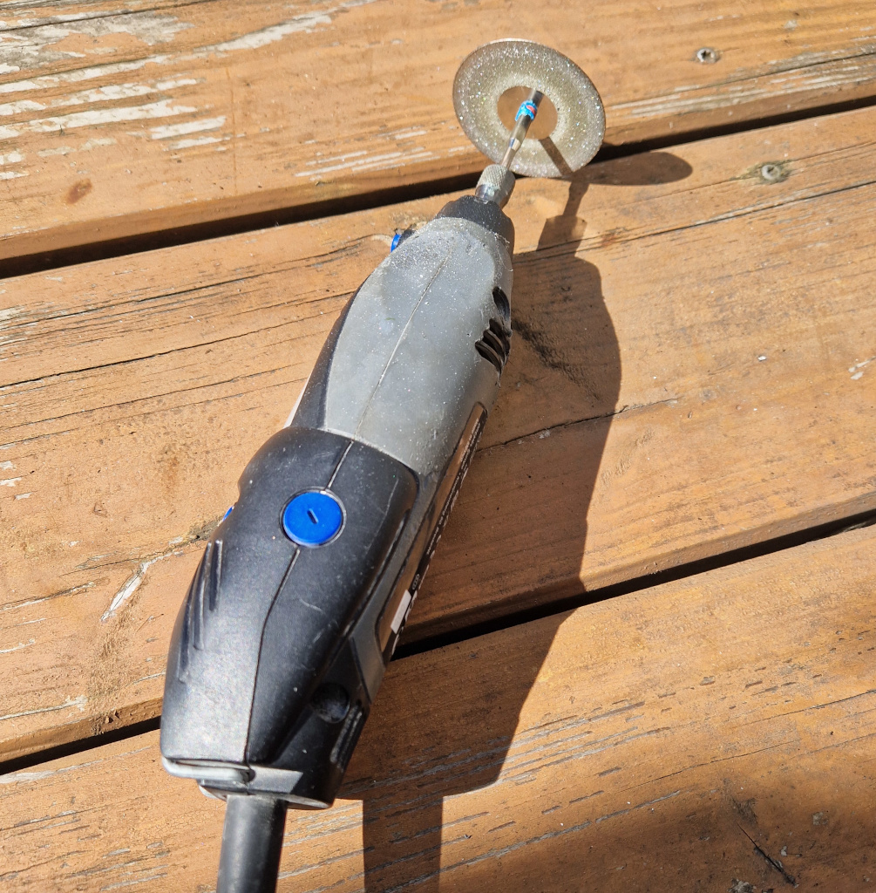
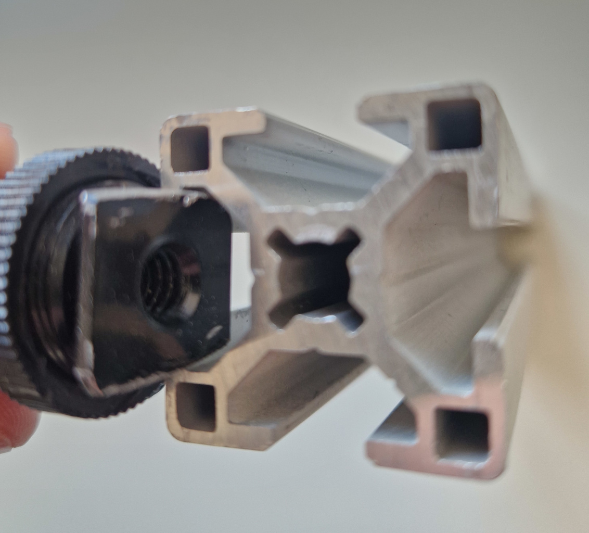
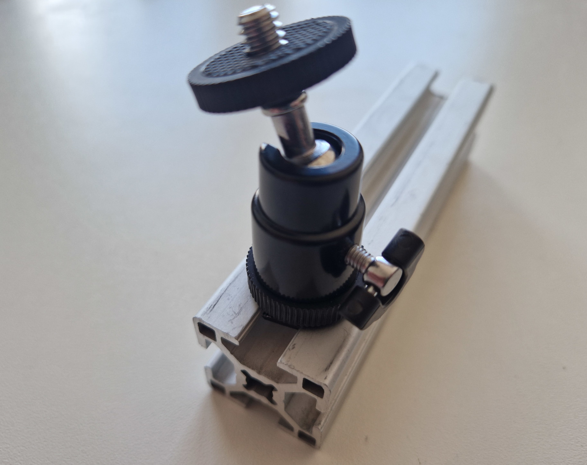
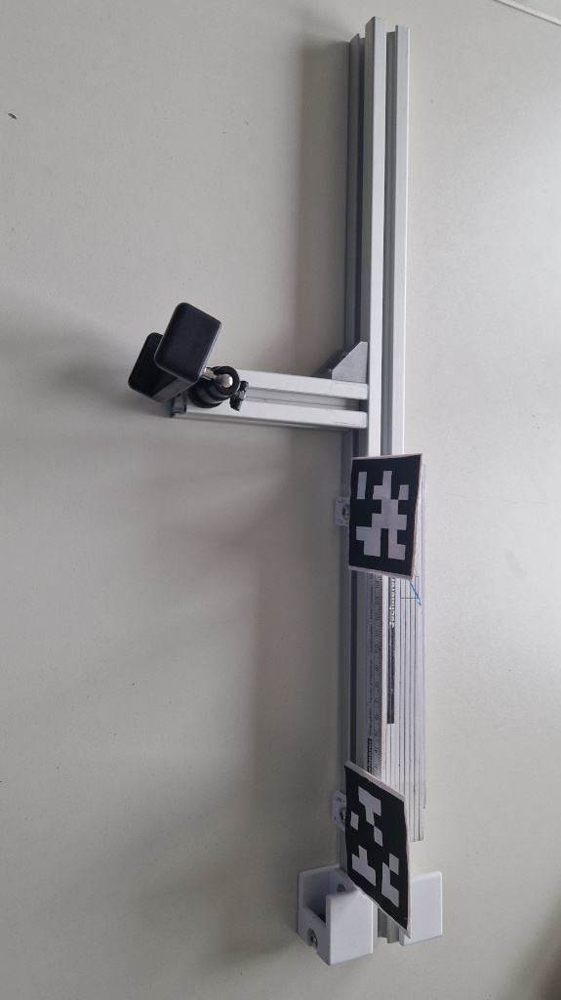
Why smartphones
I’m using two smart phones for this project. Not webcams or industrial cameras. There are reasons for this:
- webcams are typically too poor in image quality. Quick experiments have shown that the webcams I have here (Logitech C270 and Logitech StreamCam) get completly blinded by the laser line. The StreamCam refocuses too often. They also lack the resolution required for the task.
- industrial cameras would have fixed focus and white-balance, but require a laptop or computer with cables going to it. They also typically don’t capture colour. For this we would need special filters. While a robust solution could be an industrial camera with a suitable filter, that setup would be too involved for what I’m trying to achieve here.
- aiming the cameras without being able to view the camera image on a display at the camera would be tedious. It would mean walking back and forth between a computer and the camera rig. Or having someone help during calibratio. Smartphone are advantageous as they have displays built-in.
- reliability is also an issue: I need this to work on the first attempt. If I can get a good video recording in one go, I can do the analysis with more time in my office. For this I can use the ability of smartphones to record directly to internal memory.
- we also need this to work in an extremly dusty environment. I don’t want to mess up expensive equipement. Smartphones are inexpensive. They are also typically relatively sealed against dirt.
- cost is also a factor: I’m experimenting and didn’t know if any of this would work. Hence I’m not willing to spend too much money at this stage.
- connectivity os also another big adavantage of smartphones. We can record to internal storage, but we could also use the built in Wifi in combination with an appp to stream video to a computer running, for example “Open Broadcast Studio” (OBS) wirelessly.
Leveling Laser
The leveling laser is a cheap “Huepar” brand laser. I deliberatly chose the standard line laser and non-360-degree version as that wouldn’t be of much use for this project and I presume the additional rotating mirrors would lessen the life span of the leveling laser.
Placing it on a paint bucket put it at an ideal height.
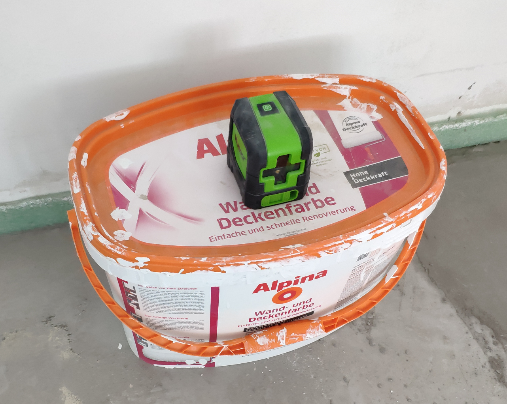
Camera and Ruler Rig
I’m calling this a “rig” for the lack of a better word. It consists of a frame built from aluminum extrusions, wheels, a smartphone as camera and a ruler.
It is pulled through the room by hand in a zig-zag pattern while the two cameras record video.
Wheels
At the bottom I’ve attached two wheels with ball bearings. I’ve designed and 3D printed the holder for a previous project.
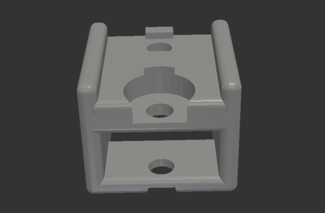
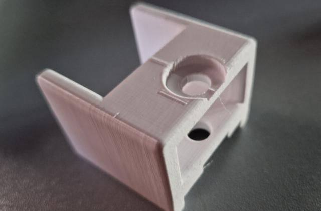
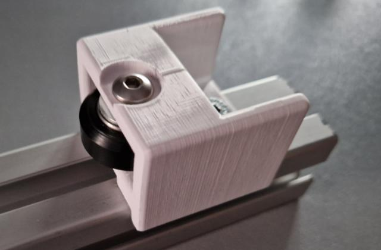
Camera
For the camera I’m using the “Samsung Galaxy S22” smartphone. It records the video and is attached to the rig. It travels along with it, recording the ruler.
It is very important to look out for some issues with this approach. If we mess up the recording we will have to start all over again. There are a few issues to look out for:
Camera Obstruction
To avoid the laser light from being blocked by the smartphone, we need to elevate the leveling laser. It needs to be placed such that the laser line can never be covered by the smartphone.
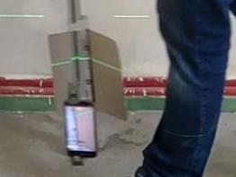
Lighting, Focus and White Balance is critical
As the S22 is not an industrial camera with fixed white-balance and focus, it may refocus during recording. That makes reading the measurements challenging.
I’ve found that adding cardboard behind the rig helps block incoming light from the windows.
Samsung “Pro-Video” features
Additionally we can use the “Pro-Video” features hidden deep in the menus of the Samsung Camera App. In this mode we can select the ISO, shutter speed and most importantly disable the auto-focus.
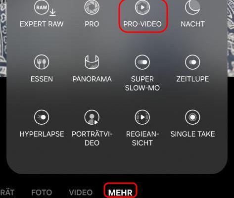
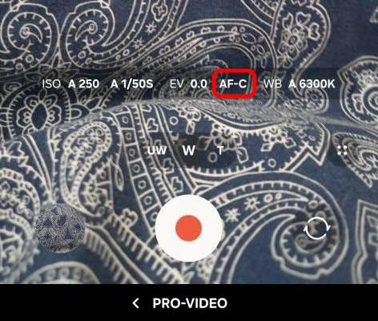
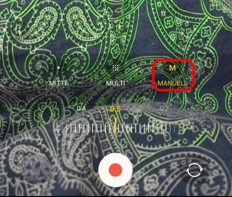
Ruler
I’ve found that my white folding rule provided best results. The aluminium ruler I used before that reflected the laser light too much and blinded the camera. The ruler needs be made of a non-reflecting material. The best solution would probably be a wooden ruler.
Positional Camera
The positional camera films the entire room during measurement. Its objective is to keep track of the position of the Camera and Ruler Rig during the measurement.
Camera
As a camera I’m using my old “Xiaomi Mi 8” smart phone. It unforunately does not have a wide-angle/fish-eye lens to cover more area of the room. The overall image quality is also not as good as the more modern and expensive “Samsung Galaxy S22”. But I only have these two cameras. For positional information the camera quality is not as important as recording the laser line on the ruler.
Camera mount on tripod
The camera is placed as high up as possible to give a birds eye view of the room. In order to achieve this I’m using a standard camera tripod that is extended as far as possible.
Covering the room with two recordings
For each recording the tripod is moved to the center of the opposite wall. We typically need two recordings to cover the entire room. The leveling laser sits directly under the tripod and is also moved along with the tripod and positional camera.
Software Setup
Once the measurements have completed we have two recordings.
Transfer to the Computer
In order to transfer the recordings to my computer I’m using Termux and SSH-Servers on the phones. I’ve written about how to install SSH servers on Android using Termux in the past (see my previous post).
Alternatively we can go old-fashioned and just copy the files over with a USB-cable. I just found the ability to use Linux bash scripts to grab the footage very convenient.
Combining and Aligning Video Recordings
Next we need to align the two videos as the recordings start and stop at different times. At first I tried to do this visually, but I found aligning by audio waveform much easier.
Using Video Editing Software
KdenLive is an excellent video editing software to do this.
It displays the waveform making it easy to align the videos by sound. Afterwards we separate the audio from the video, delete the audio tracks, crop the video feeds and position them next to each other.
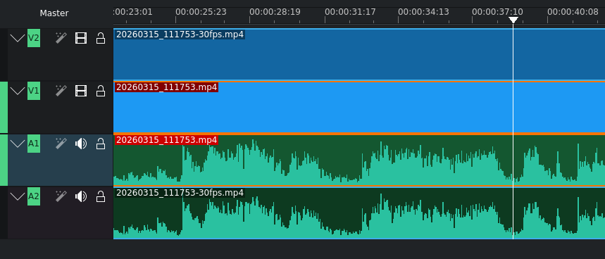
The result wit the two video recordings synchronizsed and placed side-by-side looks something like this:
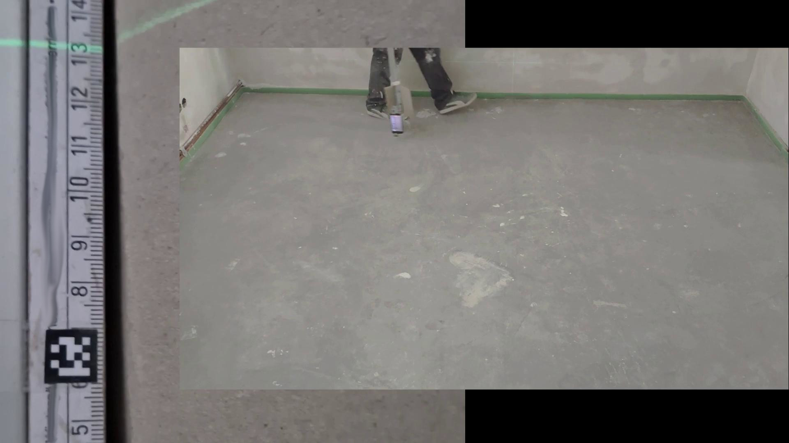
Recording both video feeds together
An alternative in order to avoid having to align the video recordings could be to set up a WiFi network, have a laptop nearby install “DroidCam” App and have “Open Broadcast Studio” (OBS) record the two video feeds together automatically. But that makes the measurement process much more involved.
Alignment by Python Script
We can also use a Python script that extracts audio from video recordings and produces a wave form.
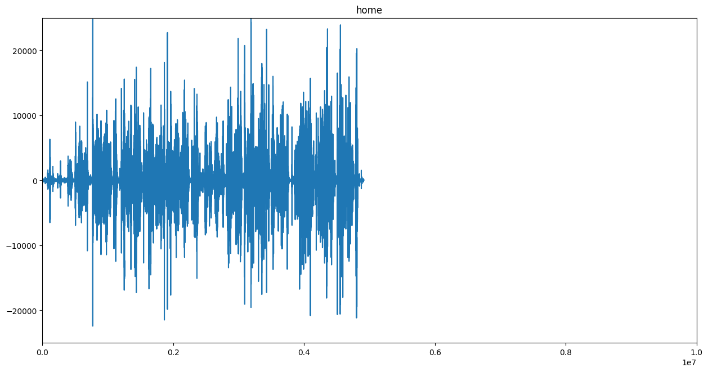
If we do this for both video recordings and then gradually shift them against each other and compute the difference - e.g. a mean-squared-error - we could find the video alignment by software automatically.
The following code I’ve cobbled together produces waveform plots from video files. It could be extended in order to auto-align video files by sound.
"""
Audio from video file to audio waveform functions.
www.dennissalzner.de 2026
see also
- https://stackoverflow.com/questions/44787437/how-to-convert-a-wav-file-to-a-spectrogram-in-python3
- https://stackoverflow.com/questions/26741116/python-extract-wav-from-video-file
- https://stackoverflow.com/questions/43284049/spectrogram-of-a-wave-file
"""
import os.path
import numpy as np
from matplotlib import pyplot as plt
import scipy.io.wavfile as wav
from numpy.lib import stride_tricks
import matplotlib.pyplot as plt
import numpy as np
import wave
import sys
def videoToAudioMonoFile(videoFile, audioFile):
if not os.path.isfile(audioFile):
import subprocess
command = f'ffmpeg -i {videoFile} -ab 160k -ac 1 -ar 44100 -vn {audioFile}'
subprocess.call(command, shell=True)
def stft(sig, frameSize, overlapFac=0.5, window=np.hanning):
win = window(frameSize)
hopSize = int(frameSize - np.floor(overlapFac * frameSize))
samples = np.append(np.zeros(int(np.floor(frameSize/2.0))), sig)
cols = np.ceil( (len(samples) - frameSize) / float(hopSize)) + 1
samples = np.append(samples, np.zeros(frameSize))
frames = stride_tricks.as_strided(samples, shape=(int(cols), frameSize), strides=(samples.strides[0]*hopSize, samples.strides[0])).copy()
frames *= win
return np.fft.rfft(frames)
def logscale_spec(spec, sr=44100, factor=20.):
timebins, freqbins = np.shape(spec)
scale = np.linspace(0, 1, freqbins) ** factor
scale *= (freqbins-1)/max(scale)
scale = np.unique(np.round(scale))
newspec = np.complex128(np.zeros([timebins, len(scale)]))
for i in range(0, len(scale)):
if i == len(scale)-1:
newspec[:,i] = np.sum(spec[:,int(scale[i]):], axis=1)
else:
newspec[:,i] = np.sum(spec[:,int(scale[i]):int(scale[i+1])], axis=1)
allfreqs = np.abs(np.fft.fftfreq(freqbins*2, 1./sr)[:freqbins+1])
freqs = []
for i in range(0, len(scale)):
if i == len(scale)-1:
freqs += [np.mean(allfreqs[int(scale[i]):])]
else:
freqs += [np.mean(allfreqs[int(scale[i]):int(scale[i+1])])]
return newspec, freqs
def plotstft(audiopath, binsize=2**10, plotpath=None, colormap="jet"):
samplerate, samples = wav.read(audiopath)
s = stft(samples, binsize)
sshow, freq = logscale_spec(s, factor=1.0, sr=samplerate)
ims = 20.*np.log10(np.abs(sshow)/10e-6) # amplitude to decibel
timebins, freqbins = np.shape(ims)
plt.figure(figsize=(15, 7.5))
plt.imshow(np.transpose(ims), origin="lower", aspect="auto", cmap=colormap, interpolation="none")
plt.colorbar()
plt.xlabel("time (s)")
plt.ylabel("frequency (hz)")
plt.xlim([0, timebins-1])
plt.ylim([0, freqbins])
xlocs = np.float32(np.linspace(0, timebins-1, 5))
plt.xticks(xlocs, ["%.02f" % l for l in ((xlocs*len(samples)/timebins)+(0.5*binsize))/samplerate])
ylocs = np.int16(np.round(np.linspace(0, freqbins-1, 10)))
plt.yticks(ylocs, ["%.02f" % freq[i] for i in ylocs])
if plotpath:
plt.savefig(plotpath, bbox_inches="tight")
else:
plt.show()
plt.clf()
return ims
def audioFileToSpectogram(audioFile, imageFile):
ims = plotstft(audiopath=audioFile, plotpath=imageFile)
def audioFileToWaveform(audioFile, imageFile):
spf = wave.open(audioFile, "r")
signal = spf.readframes(-1)
signal = np.frombuffer(signal, np.int16) # fromstring
if spf.getnchannels() == 2:
print("Just mono files")
sys.exit(0)
plt.figure(1)
plt.title(audioFile.replace(".wav", "").split("/")[1])
plt.plot(signal)
ax = plt.gca()
ax.set_xlim([0, 10e6])
ax.set_ylim([-25000, 25000])
plt.savefig(imageFile, bbox_inches="tight")
plt.clf()
Digitizing the Readings
In order to produce the two-dimensional map we need to then transfer the aligned and combined video into readings.
This will produce a map similar to the this:
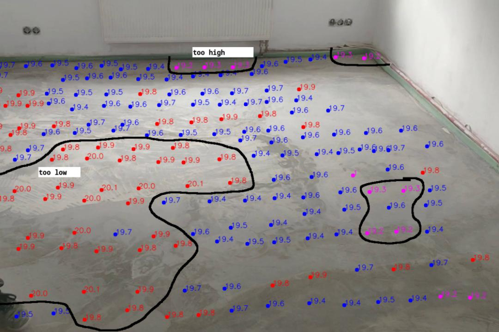
Manually digitizing readings
In order to transfer the readings over to a *.csv file containing the position and height I wrote a Python script.
imageX_px imageY_px height_cm
[..]
568 251 19.7
637 248 19.6
[..]
1236 248 19.6
1296 237 19.5
1359 231 19.4
[..]
They Python script allows me to play the video back slowly and then manually click on the location of the rig in the video and then type in the reading from the ruler. It will then automatically overlay the readings onto the video feed and colour the readings according offset from the median value.
"""
Manual digitizing readings in video stream
www.dennissalzner.de 2026
dependencies
- pip install opencv-contrib-python
see also
- https://www.geeksforgeeks.org/python/python-opencv-cv2-puttext-method/
- https://docs.opencv.org/3.4/d0/d90/group__highgui__window__flags.html
- https://stackoverflow.com/questions/14655969/opencv-v1-v2-error-the-function-is-not-implemented
- https://stackoverflow.com/questions/72827341/opencv-video-not-shown-full-size
- https://techtutorialsx.com/2020/12/13/python-opencv-add-slider-to-window/
"""
import os
import cv2
import time
vc = cv2.VideoCapture("<path-to-combined-video-file>.mp4")
if vc.isOpened(): # try to get the first frame
rval, frame = vc.read()
else:
rval = False
labels = [] # [(0, 150, "test")]
def draw_circle(event,x,y,flags,param):
global mouseX,mouseY, labels
if event == cv2.EVENT_LBUTTONDOWN: #EVENT_LBUTTONDBLCLK:
print(x, y)
t = input("enter height:")
print(t)
labels += [(x, y, t)]
mouseX,mouseY = x,y
font = cv2.FONT_HERSHEY_SIMPLEX
fontScale = 0.6
thickness = 1
if os.path.isfile("output.txt"):
with open("output.txt","r") as f:
for line in f:
entry = line.strip().split(" ")
if len(entry) == 3:
(x,y,t) = entry
labels += [(int(x),int(y),t)]
while rval:
with open("output.txt", "w") as txt_file:
summed = 0
count = 0
avg = 0
for label in labels:
(x, y, t) = label
if t == "":
continue
if count > 0:
avg = summed / count
try:
summed += float(t)
except:
print("error float parsing, skipping")
continue
count += 1
c = (255,0,0)
if float(t) > avg + 0.3:
c = (0, 0, 255)
if float(t) <= avg - 0.3:
c = (255, 0,255)
frame = cv2.putText(frame, t, (x, y), font, fontScale, c, thickness, cv2.LINE_AA)
cv2.circle(frame,(x,y),5, c,-1)
txt_file.write(" ".join([str(e) for e in label]) + "\n")
cv2.imshow("preview", frame)
cv2.setMouseCallback('preview',draw_circle)
rval, frame = vc.read()
key = cv2.waitKey(20)
if key == 27: # exit on ESC
break
time.sleep(0.25)
vc.release()
After playing through the video, clicking and typing in the measurements by hand we end up with something like this:
With practice and all equipment ready it takes around 15 minutes to record the videos, 10 minutes with editing to merge the videos and another 30 minutes to transfer the readings.
Automatically getting position from the video
I’ve taken the automation a little further and have some scripts to help with the process.
Backgroud Image
It is helpful to first produce a “background” image, that is the average image over a large number of frames. This background image can later be subtracted.
"""
Produce background image from video frames
www.dennissalzner.de 2026
see also
- https://learnopencv.com/simple-background-estimation-in-videos-using-opencv-c-python/
- https://www.geeksforgeeks.org/python/background-subtraction-in-an-image-using-concept-of-running-average/
"""
import cv2
import numpy as np
VIDEO_FILE_2="<path-to-position-recording>.mp4"
def getBackgroundImage(videoFile, weightingAlpha=0.0001, skipFrames=10, noFrames=100): #skipFrames=3000, noFrames=4000):
cap = cv2.VideoCapture(videoFile)
_, img = cap.read()
averageValue1 = np.float32(img)
while True:
noFrames = noFrames -1
if noFrames == 0:
break
if noFrames < skipFrames:
continue
_, img = cap.read()
cv2.accumulateWeighted(img, averageValue1, weightingAlpha) #0.02)
resultingFrames1 = cv2.convertScaleAbs(averageValue1)
cap.release()
cv2.destroyAllWindows()
return resultingFrames1
if __name__ == '__main__':
im = getBackgroundImage(VIDEO_FILE_2)
cv2.imshow('Background', im)
cv2.waitKey(0)
By running this we get an image like this:
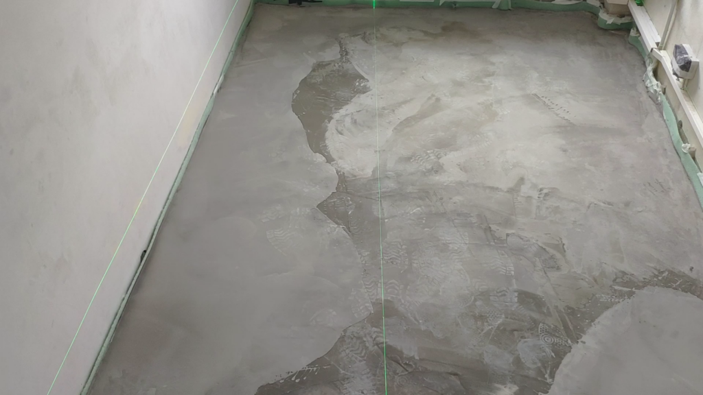
Subtracting Background
We can then use the above background function to subtract the background when displaying the video.
"""
Subtract background image from video frames
www.dennissalzner.de 2026
see also
- https://stackoverflow.com/questions/21425992/how-to-subtract-two-images-using-python-opencv2-to-get-the-foreground-object
- https://learnopencv.com/moving-object-detection-with-opencv/
"""
import cv2
import numpy as np
from a02_backgroundImage import *
VIDEO_FILE_2="<path-to-position-recording>.mp4"
def markPosition(videoFile, skipFrames=1000):
backgroundImage = getBackgroundImage(videoFile)
cap = cv2.VideoCapture(videoFile)
_, img = cap.read()
averageValue1 = np.float32(img)
frameNo = 0
while True:
_, img = cap.read()
frameNo += 1
if skipFrames > frameNo:
continue
res = cv2.absdiff(backgroundImage, img)
cv2.imshow('Frame', res)
if cv2.waitKey(30) & 0xFF == 27:
break
cap.release()
cv2.destroyAllWindows()
markPosition(VIDEO_FILE_2)
Which will yield video frames like the following:
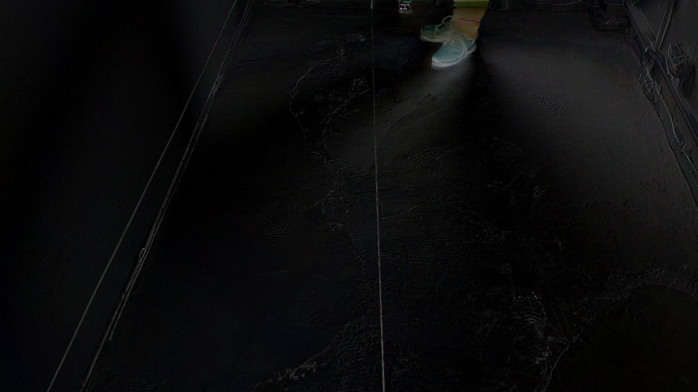
As you can see the area containing the camera rig is highlighted. Unfortunately, so are also my feet. Distinguishing my feed from the camera rig and also dealing with the smart phone display turned out to be a real challenge.
Contour Detection
I tried to detect contours, also applying thresholding, with the goal of then computing clusters and filtering them by size.
"""
Subtract background image from video frames and compute contours
www.dennissalzner.de 2026
see also
- https://stackoverflow.com/questions/21425992/how-to-subtract-two-images-using-python-opencv2-to-get-the-foreground-object
- https://learnopencv.com/moving-object-detection-with-opencv/
- https://learnopencv.com/contour-detection-using-opencv-python-c/
"""
from a02_backgroundImage import *
import cv2
import numpy as np
VIDEO_FILE_2="<path-to-position-recording>.mp4"
def markPosition(videoFile, skipFrames=2000):
backgroundImage = getBackgroundImage(videoFile)
cap = cv2.VideoCapture(videoFile)
_, img = cap.read()
averageValue1 = np.float32(img)
frameNo = 0
while True:
_, img = cap.read()
frameNo += 1
if skipFrames > frameNo:
continue
res = cv2.absdiff(backgroundImage, img)
cv2.imshow('Frame', res)
img_gray = cv2.cvtColor(res, cv2.COLOR_BGR2GRAY)
ret, thresh = cv2.threshold(img_gray, 100, 255, cv2.THRESH_BINARY)
cv2.imshow('Threshold', thresh)
contours, hierarchy = cv2.findContours(image=thresh, mode=cv2.RETR_TREE, method=cv2.CHAIN_APPROX_NONE)
image_copy = res.copy()
cv2.drawContours(image=image_copy, contours=contours, contourIdx=-1, color=(0, 255, 0), thickness=2, lineType=cv2.LINE_AA)
cv2.imshow('contours', image_copy)
if cv2.waitKey(30) & 0xFF == 27:
break
cap.release()
cv2.destroyAllWindows()
markPosition(VIDEO_FILE_2)
This produced promising, but unrealiable results
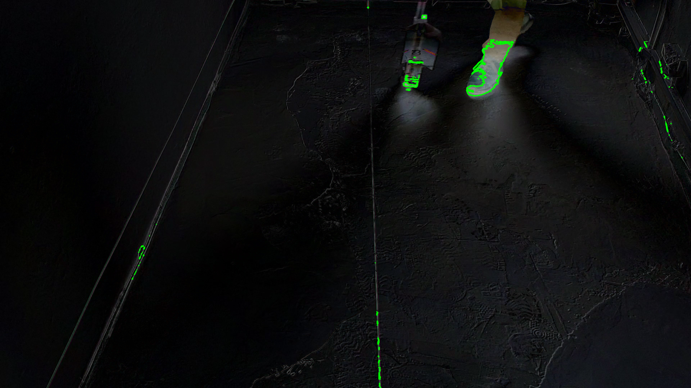
Colour Filtering
Simply filtering by colour can also help. I’ve filtered for a colour in order to produce a mask. Then overlayed that mask as red onto the image.
"""
Colour filtering, mask and overlay,
www.dennissalzner.de 2026
"""
import cv2
import numpy as np
from a02_backgroundImage import *
VIDEO_FILE_2="<path-to-position-recording>.mp4"
def getFrameNo(videoFile, frameNo=2000):
cap = cv2.VideoCapture(videoFile)
_, img = cap.read()
while True:
_, img = cap.read()
frameNo -= 1
if frameNo != 0:
continue
break
cap.release()
cv2.destroyAllWindows()
return img
frame = getFrameNo(VIDEO_FILE_2)
backgroundImage = getBackgroundImage(VIDEO_FILE_2)
image = cv2.absdiff(backgroundImage, frame)
hsv_image = cv2.cvtColor(image, cv2.COLOR_BGR2HSV)
lower_white = np.array([0, 0, 100])
upper_white = np.array([180, 30, 255])
mask = cv2.inRange(hsv_image, lower_white, upper_white)
red_overlay = np.zeros_like(image, dtype=np.uint8)
red_overlay[:] = (0, 0, 255) # BGR format: Blue, Green, Red
red_masked = cv2.bitwise_and(red_overlay, red_overlay, mask=mask)
combined_image = cv2.addWeighted(image, 1.0, red_masked, 1.0, 0)
cv2.imshow("Mask Image", combined_image)
cv2.waitKey(0)
This produced a better result than the contours.
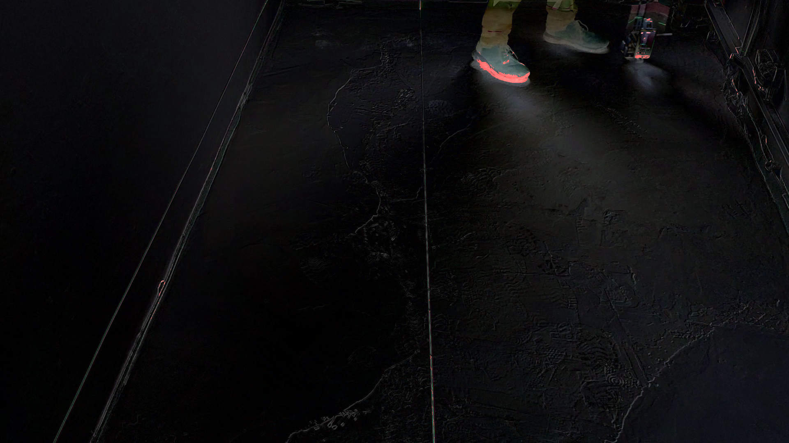
Adjusting Colour Filtering
In order to adjust the HSV colour ranges I’ve found some code floating around online that provides sliders for manual adjustment.
"""
Sliders to find HSV colour values for colour filtering.
Adapted from Code found on medium.com/@VinitKumarGupta.
www.dennissalzner.de 2026
see also
- https://medium.com/@VinitKumarGupta/color-detection-in-opencv-a-hands-on-project-to-master-hsv-filtering-5fa9fd928561
"""
import cv2
import numpy as np
VIDEO_FILE_2="<path-to-position-recording>.mp4"
def getFrameNo(videoFile, frameNo=2000):
cap = cv2.VideoCapture(videoFile)
_, img = cap.read()
while True:
_, img = cap.read()
frameNo -= 1
if frameNo != 0:
continue
break
cap.release()
cv2.destroyAllWindows()
return img
image = getFrameNo(VIDEO_FILE_2)
def empty(a):
pass
cv2.namedWindow("Trackbars")
cv2.resizeWindow("Trackbars", 640, 240)
cv2.createTrackbar("HUE MIN", "Trackbars", 0, 179, empty)
cv2.createTrackbar("HUE MAX", "Trackbars", 179, 179, empty)
cv2.createTrackbar("SAT MIN", "Trackbars", 0, 255, empty)
cv2.createTrackbar("SAT MAX", "Trackbars", 255, 255, empty)
cv2.createTrackbar("VAL MIN", "Trackbars", 0, 255, empty)
cv2.createTrackbar("VAL MAX", "Trackbars", 255, 255, empty)
while True:
imgHSV = cv2.cvtColor(image, cv2.COLOR_BGR2HSV)
h_min = cv2.getTrackbarPos("HUE MIN", "Trackbars")
h_max = cv2.getTrackbarPos("HUE MAX", "Trackbars")
s_min = cv2.getTrackbarPos("SAT MIN", "Trackbars")
s_max = cv2.getTrackbarPos("SAT MAX", "Trackbars")
v_min = cv2.getTrackbarPos("VAL MIN", "Trackbars")
v_max = cv2.getTrackbarPos("VAL MAX", "Trackbars")
lower = np.array([h_min, s_min, v_min])
upper = np.array([h_max, s_max, v_max])
mask = cv2.inRange(imgHSV, lower, upper)
cv2.imshow("Original Image", image)
cv2.imshow("HSV Image", imgHSV)
cv2.imshow("Mask Image", mask)
if cv2.waitKey(0) & 0xFF == ord('q'):
break
cv2.destroyAllWindows()
With that we can experiment by using the sliders to filter by different HSV upper and lower boundaries.
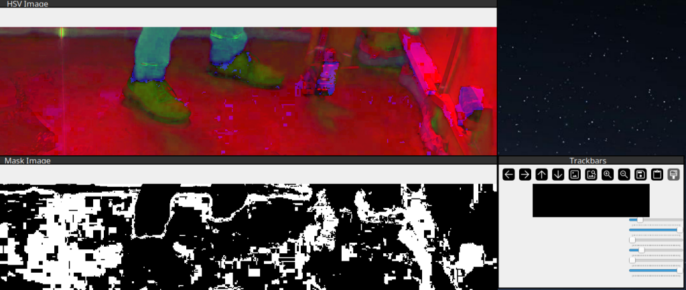
Object-Detection Neural Network
However, the best soluton by far that I was able to achieve was by “simply” using a Neural Network trained for object recognition.
"""
Object-Recognition using YOLOv11
www.dennissalzner.de 2026
"""
import cv2
import numpy as np
from ultralytics import YOLO
VIDEO_FILE_2="<path-to-position-recording>.mp4"
MODEL_PATH = "yolo11s.pt"
model = YOLO(MODEL_PATH)
id2name = model.names
wanted_ids = {i for i, n in id2name.items()}
skipFrames = 2000
cap = cv2.VideoCapture(VIDEO_FILE_2)
_, frame = cap.read()
frameNo = 0
while True:
_, frame = cap.read()
frameNo += 1
if skipFrames > frameNo:
continue
results = model(frame, verbose=False)[0]
if results.boxes and len(results.boxes) > 0:
for (cls_id, conf, xyxy) in zip(results.boxes.cls.tolist(),
results.boxes.conf.tolist(),
results.boxes.xyxy.tolist()):
if not cls_id in wanted_ids:
continue
if id2name[cls_id] == "person":
continue
x1, y1, x2, y2 = xyxy
print(id2name[cls_id])
print(xyxy)
# -- draw point
c = (0, 0, 255)
y = int(y2)
x = int(x1 + (x2 - x1) / 2)
cv2.circle(frame,(x,y),5, c,-1)
cv2.imshow('Frame', frame)
if cv2.waitKey(30) & 0xFF == 27:
break
cap.release()
cv2.destroyAllWindows()
If draw rectangles at x1, y1, x2, y2 and write id2name[cls_id]` into the image we get this this:
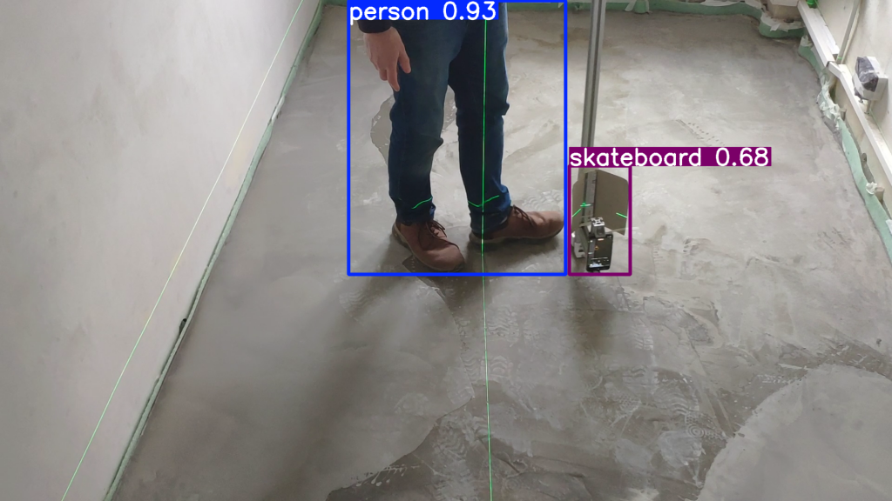
I found that my feet are reliably detected as “person”. The camera rig was being detected as all sorts of things: “bottle”, “skateboard”, “suitcase”, traffic light”, “cell phone”, “surf board” and so on.
But that does not matter. We can simply check for anything that is not equal to “person”. As there is nothing in the room except for floor and walls, this works exceptionally well.
Taking the center of the rectangle on the non-person detection lets me accurately place a red dot at the position of the camera rig.
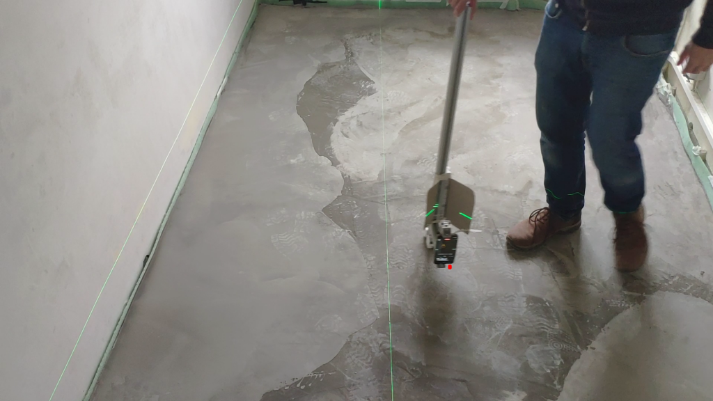
That’s pretty much exactly what I was looking for. In order to futher improve this we can apply averaging over positional values over time. It is clearly expected that they unformly increase in x and jump in y from time to time, when a new row begins. That property can be exploited to filter outliers.
Automatically getting height measurements from the video
In order to automatically get the height readings we can make use of the “April”-Tags I’ve added to the camera rig.
I’ve found that the april tag generator found here [1] works well. I print type “tag25h9” tags at about 70x70mm size. Some old 3D printed leftovers that I cut to a suitable shape make sturdy mounts for the printed out april tags. Make sure they are perfectly flat and facing towards the camera and there should be no problem detecting them.
``py “”” April Tag detector Based on code from pyimagesearch.com
www.dennissalzner.de 2026
see also
- https://pyimagesearch.com/2020/11/02/apriltag-with-python/
- https://chaitanyantr.github.io/apriltag.html “””
VIDEO_FILE_2=”
import cv2 import numpy as np import apriltag skipFrames = 2000 cap = cv2.VideoCapture(VIDEO_FILE_2) _, frame = cap.read() frameNo = 0 while True: _, frame = cap.read() frameNo += 1 if skipFrames > frameNo: continue
gray = cv2.cvtColor(frame, cv2.COLOR_BGR2GRAY)
options = apriltag.DetectorOptions(families="tag25h9")
detector = apriltag.Detector(options)
results = detector.detect(gray)
if len(results) != 0:
print("[INFO] {} total AprilTags detected".format(len(results)))
for r in results:
(ptA, ptB, ptC, ptD) = r.corners
ptB = (int(ptB[0]), int(ptB[1]))
ptC = (int(ptC[0]), int(ptC[1]))
ptD = (int(ptD[0]), int(ptD[1]))
ptA = (int(ptA[0]), int(ptA[1]))
cv2.line(frame, ptA, ptB, (0, 255, 0), 2)
cv2.line(frame, ptB, ptC, (0, 255, 0), 2)
cv2.line(frame, ptC, ptD, (0, 255, 0), 2)
cv2.line(frame, ptD, ptA, (0, 255, 0), 2)
(cX, cY) = (int(r.center[0]), int(r.center[1]))
cv2.circle(frame, (cX, cY), 5, (0, 0, 255), -1)
tagFamily = r.tag_family.decode("utf-8")
cv2.putText(frame, tagFamily, (ptA[0], ptA[1] - 15),
cv2.FONT_HERSHEY_SIMPLEX, 0.5, (0, 255, 0), 2)
print("[INFO] tag family: {}".format(tagFamily))
cv2.imshow('Frame', frame)
if len(results) != 0:
cv2.waitKey(0)
if cv2.waitKey(30) & 0xFF == 27:
break cap.release() cv2.destroyAllWindows() ```
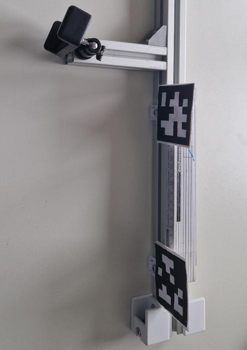
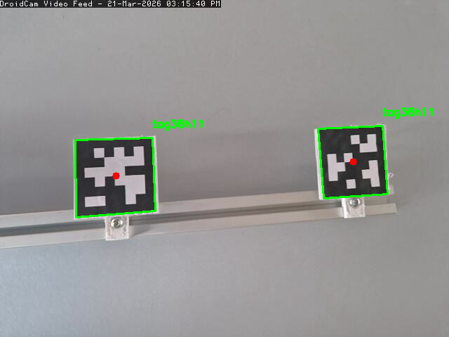
In order to measure the height all we need to do is move pixelwise along a line between the two tags and check for the brightest green line - that is typically the live of the leveling laser.
We then can compute a percentage position of where the line is between the april tags. Knowing the distance they have to eachother we can convert that value into millimeters.
How accurate this will be depends on many factors. Within <2 mm precision should be achievable.
Live testing with OpenCV
In the above snippets I often use
cap = cv2.VideoCapture(VIDEO_FILE_2)
_, frame = cap.read()
If your phone is on the same network and is running an MJPEG stream, we can alter the code to
cap = cv2.VideoCapture("http://<ip address of your phone>:4747/mjpegfeed")
_, frame = cap.read()
and use the live camera feed to calibrate things instead of recording to video.
The App “DroidCam Webcam (classic) von Dev47SApps” can provide such a stream.
Conclusion
My goal was to produce a two dimensional map of the floor height. For this I’ve developed an accurate measurement method using cameras. We’ve also explored automatic video analysis to varying degrees.
This experiment was a good excuse to try computer vision approaches in OpenCV and run the Yolo object recognition neural network.
In the next parts of the series I’ll work on an electronic target plate that detects the laser line, acurately digitizes the height directly during the measurement and outputs the values by serial connection.
1] https://chaitanyantr.github.io/apriltag.html